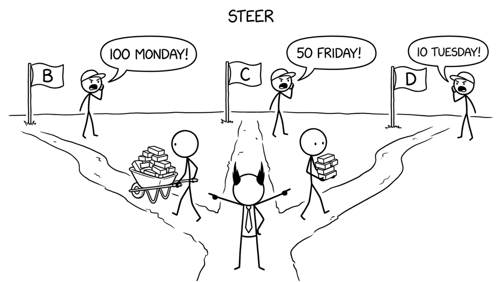

<section id="steer" data-transition="fade" style="display:flex; align-items:center; justify-content:center; padding:0; background:#fcfcfa">

<p style="position:absolute;left:0;bottom:10px;width:1920px;margin:0;text-align:center;font-family:'Patrick Hand', 'Trebuchet MS', sans-serif;font-size:22px;color:#8a8f98">Copyright Dobromir Montauk 2026</p>
<aside><b>Steer.</b> Three customers, three deadlines, and each one is sure they're the priority. Your job is to turn the noise into an order: value, deadline, size.<br>- The big launch due Monday gets most of the team.<br>- The small fix for a key account due Tuesday gets one engineer, so it ships and is off the board.<br>- The Friday request waits on purpose, and you tell that customer explicitly, with a date.<br>Spread the team across all three and everything ships late. Re-check mid-week: did priorities change? Did sales promise something new?</aside>
</section>
